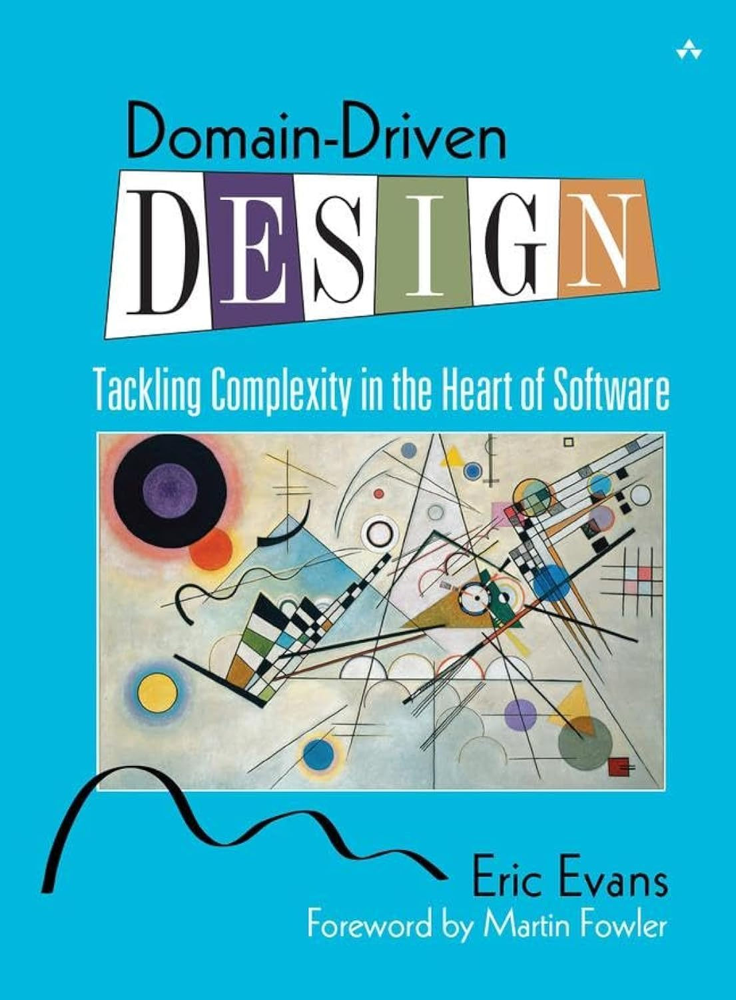
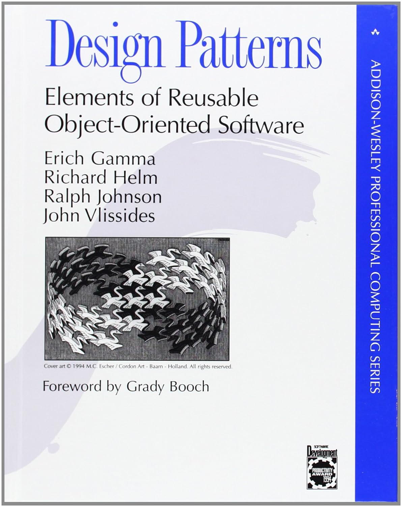
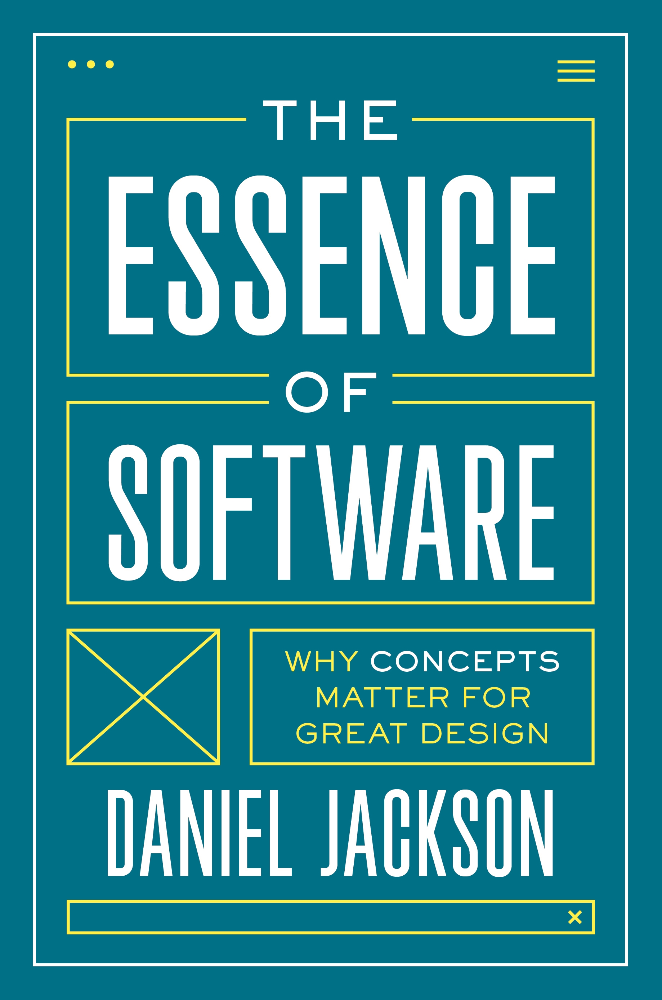
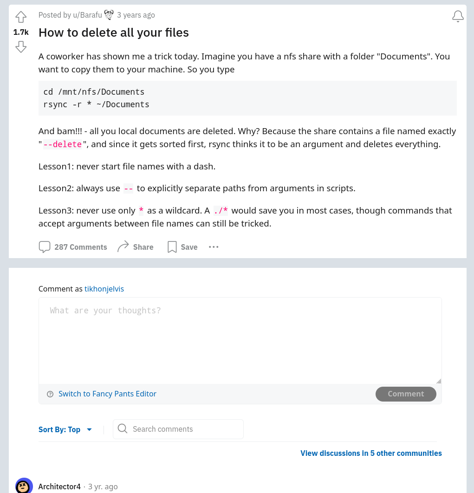
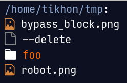
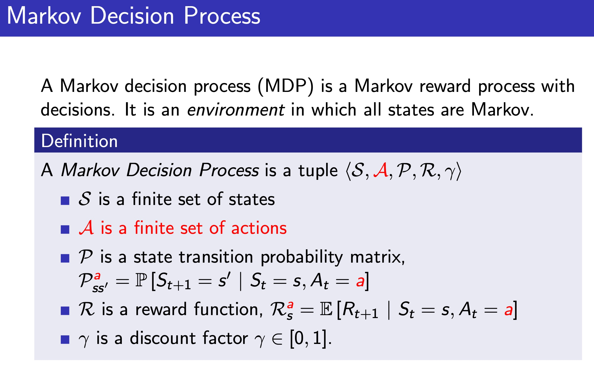
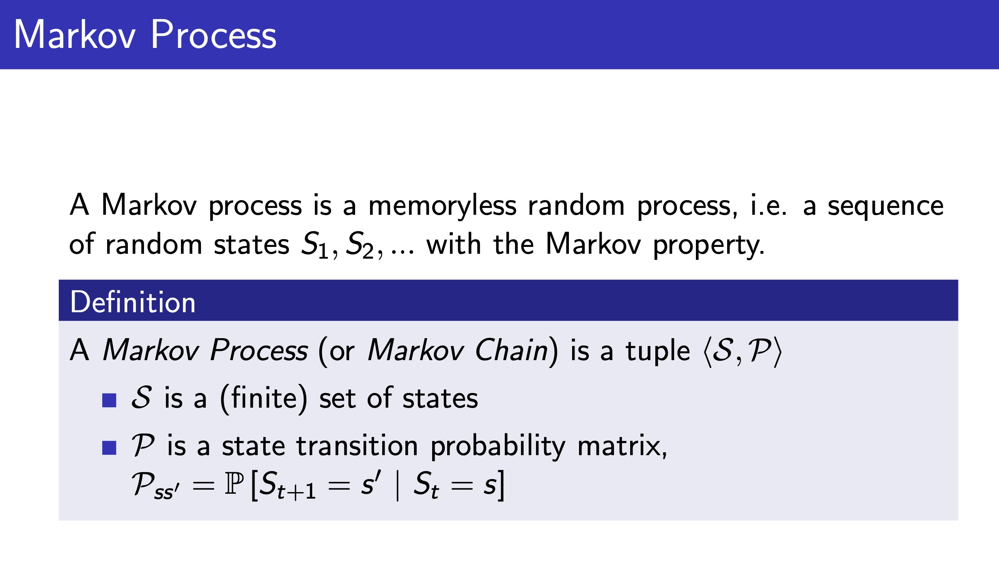
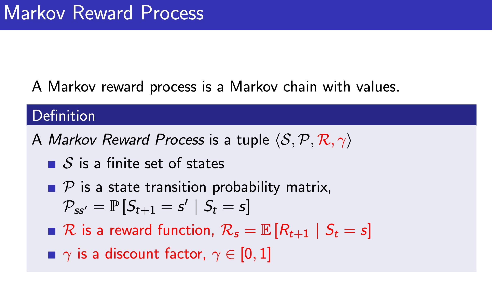
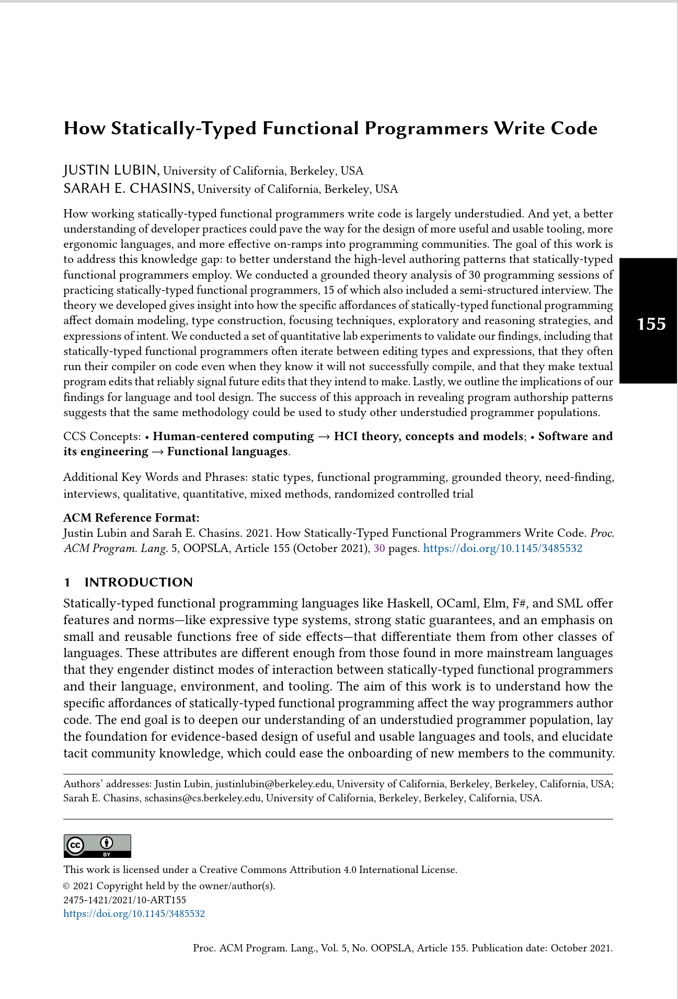
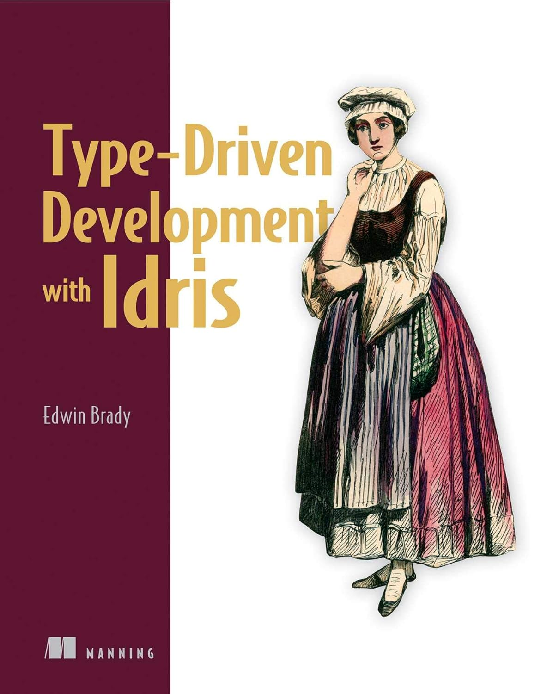

Types ⇔ Design
Tikhon Jelvis
-

- 
- 
-

-




“Programming is planning.”
Programming is design.



rsync -r --delete ~/path/a ~/path/b
rsync -r --delete ~/path/a ~/path/b
rsync -r --delete ~/path/a ~/path/b
rsync -r * ~/out
rsync -r ~/path/a ~/path/b

bugs
structure
design
“Types catch mistakes”
“Types structure my code”

“Types help me think”

Information hiding:
abstract over implementation
::
Static types:
abstract over runtime
a different sort of abstraction
encode :: Image RGB -> ByteString
encode = _
encode :: Image RGB -> ByteString
encode = _
colorSpace :: Image RGB -> Image YCbCr
colorSpace = _
downsample :: Image YCbCr
-> Downsampled
downsample = _
blocks :: Downsampled
-> [Downsampled]
blocks = _
…
data Image space = Image
{ pixels :: Vector space }
data Downsampled = Downsampled
{ y :: Vector Word8
, cb :: Vector Word8
, cr :: Vector Word8
}



data MarkovProcess m s = MP {
step :: s -> m s
}
data MarkovRewardProcess m s = MRP {
step :: s -> m (r, s)
}
data MDP m a s = MDP {
step :: s -> a -> m (r, s)
}
type Policy s a = s -> a
data MarkovProcess m s = MP {
step :: s -> m s
}
type MarkovRewardProcess m s =
MarkovProcess (WriterT Reward m) s
data MDP m a s = MDP {
step :: s -> a -> m s
}
apply :: MDP m a s
-> Policy s a
-> MarkovProcess m s
▿
data MDP m a s = MDP {
step :: s -> a -> m s
}
▿
data MDP m a s = MDP {
step :: s -> a -> m s
}
▿
data MDP m a s = MDP {
step :: s -> a -> m s
}
So, what did static typing get us?
simplify our conceptual model
feedback before we had runnable code
interactive support as we program
high-level guide to our conceptual model
Type-Driven Development
Concepts ⇒ Types ⇒ Code

Domain Driven Design?

Dependent Types?

LLM Code Generation
Today: boilerplate, bad code, no design, no verification
Tomorrow: better tools, good design, verification?